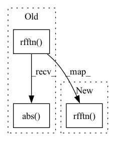

Pattern ID :38424
Before Change
tmp_sinos.append(sino)
tmp_sinos = torch.stack(tmp_sinos)
tmp_sinos = torch.fft.rfftn(tmp_sinos, dim=[1, 2]).abs()
tmp_sinos[tmp_sinos == 0] = 1.
tmp_sinos = torch.log(tmp_sinos)
self.mag_min = tmp_sinos.min()
self.mag_max = tmp_sinos.max()After Change
tmp_sinos.append(sino)
tmp_sinos = torch.stack(tmp_sinos)
tmp_ffts = torch.fft.rfftn( tmp_sinos, dim=[1, 2])
tmp_amps = log_amplitudes(tmp_ffts.abs())
self.amp_min = tmp_amps.min()
self.amp_max = tmp_amps.max()
else:In pattern: SUPERPATTERN
Frequency: 3
Non-data size: 3
Instances Fragment ID: 109740266
Project Name: juglab/fourierimagetransformer
Commit Name: 931f91c1b27b26ccf5f362b49a9ed4f667944627
Time: 2021-03-30
Author: tibuch@mpi-cbg.de
File Name: fit/datamodules/tomo_rec/TRecFCDataset.py
M Class Name: TRecFourierCoefficientDataset
N Class Name: TRecFourierCoefficientDataset
M Method Name: __init__(7)
N Method Name: __init__(7)
M Parent Class: Dataset
N Parent Class: Dataset
M File Name: fit/datamodules/tomo_rec/TRecFCDataset.py
N File Name: fit/datamodules/tomo_rec/TRecFCDataset.py
M Start Line: 20
M End Line: 25
N Start Line: 22
N End Line: 26
Before Change
def psfft(r, pixel_res=32):
return torch.fft.rfftn(psf_real(r, pixel_res)).abs()
def normalize_minmse(x, target):
Affine rescaling of x, such that the mean squared error to target is minimal.After Change
def psfft(r, pixel_res=32):
return torch.fft.rfftn( psf_real(r, pixel_res))
def normalize_minmse(x, target):
Affine rescaling of x, such that the mean squared error to target is minimal. Fragment ID: 109740270
Project Name: juglab/fourierimagetransformer
Commit Name: c51ce7fc17d2b0263eeaeb63edf8df0b434a1135
Time: 2021-03-11
Author: tibuch@mpi-cbg.de
File Name: fit/utils/utils.py
M Class Name: AnonimousClass
N Class Name: AnonimousClass
M Method Name: psfft(2)
N Method Name: psfft(2)
M Parent Class:
N Parent Class:
M File Name: fit/utils/utils.py
N File Name: fit/utils/utils.py
M Start Line: 56
M End Line: 56
N Start Line: 56
N End Line: 56
Before Change
tmp_imgs.append(img)
tmp_imgs = torch.stack(tmp_imgs)
tmp_imgs = torch.fft.rfftn(tmp_imgs, dim=[1, 2]).abs()
tmp_imgs[tmp_imgs == 0] = 1.
tmp_imgs = torch.log(tmp_imgs)
self.mag_min = tmp_imgs.min()
self.mag_max = tmp_imgs.max()After Change
tmp_imgs.append(img)
tmp_imgs = torch.stack(tmp_imgs)
tmp_ffts = torch.fft.rfftn( tmp_imgs, dim=[1, 2])
log_amps = log_amplitudes(tmp_ffts.abs())
self.amp_min = log_amps.min()
self.amp_max = log_amps.max()
else: Fragment ID: 109740268
Project Name: juglab/fourierimagetransformer
Commit Name: 931f91c1b27b26ccf5f362b49a9ed4f667944627
Time: 2021-03-30
Author: tibuch@mpi-cbg.de
File Name: fit/datamodules/super_res/SResFCDataset.py
M Class Name: SResFourierCoefficientDataset
N Class Name: SResFourierCoefficientDataset
M Method Name: __init__(6)
N Method Name: __init__(6)
M Parent Class: Dataset
N Parent Class: Dataset
M File Name: fit/datamodules/super_res/SResFCDataset.py
N File Name: fit/datamodules/super_res/SResFCDataset.py
M Start Line: 17
M End Line: 22
N Start Line: 19
N End Line: 23